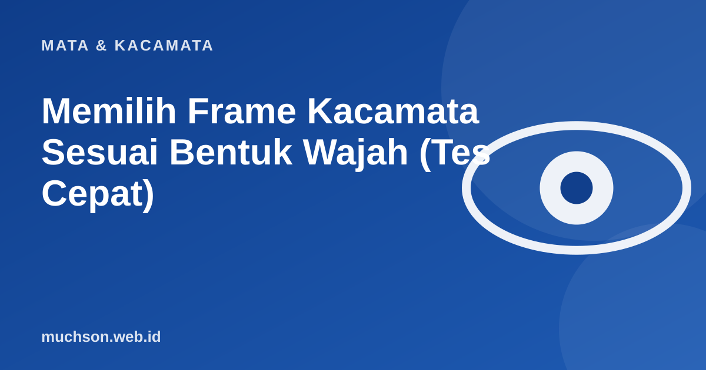

Beranda › Artikel › Mata & Kacamata
Mata & KacamataMemilih Frame Kacamata Sesuai Bentuk Wajah (Tes Cepat)
Frame yang bagus di orang lain belum tentu bagus di wajah Anda. Ada pola sederhana yang membantu: bentuk frame yang berlawanan dengan bentuk wajah cenderung terlihat seimbang. Tes singkat di bawah membantu Anda menentukan titik awal, lalu tetap coba langsung sebelum membeli.

Tes cepat bentuk wajah
Selain bentuk, perhatikan ini
- Ukuran: frame tidak lebih lebar dari wajah dan alis tidak tertutup seluruhnya.
- Jembatan hidung: frame tidak boleh meninggalkan bekas atau melorot saat menunduk.
- Warna: warna hangat (cokelat, emas) cocok kulit hangat; hitam, abu, dan biru cocok kulit cerah dan dingin. Coba bila ragu.
- Berat dan bahan: bila dipakai seharian, ringan lebih penting daripada tampilan.
- Ketinggian lensa: lensa progresif membutuhkan tinggi lensa yang cukup. Tanyakan ke optik.
Tips praktis
Cara termudah menghindari salah pilih: coba langsung di toko, atau beli online dari toko yang menyediakan konsultasi dan ukuran lengkap (lebar lensa, jembatan, tangkai).
Tanya jawab
Apakah bentuk wajah benar-benar menentukan?
Hanya sebagai panduan awal. Ukuran, proporsi, dan selera pribadi sama pentingnya. Coba beberapa model dan pilih yang membuat Anda nyaman.
Frame mana yang paling aman bagi pemula?
Persegi panjang atau bulat sedang dengan ukuran sedang, warna netral seperti hitam, cokelat tua, atau transparan.
Bagaimana bila minus saya besar?
Pilih frame yang lebih kecil dan bentuk bulat atau oval, lalu pertimbangkan lensa yang lebih tipis agar tidak tebal di tepi.